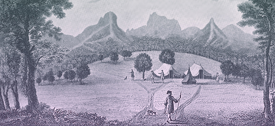

| The Islands of Juan Fernandez |
|
||||
|  | ||||
| Piercy Brett. 'A View of The Commodore's Tent at the Island of Juan Fernandes'. 1748 | ||||
|
|
I also have this engraving published in Dublin by J.Christie. This seems to be a rough copy of the original. The caption is: 'A View of the Commodores Tents in the Island of Juan Fernandes | |||